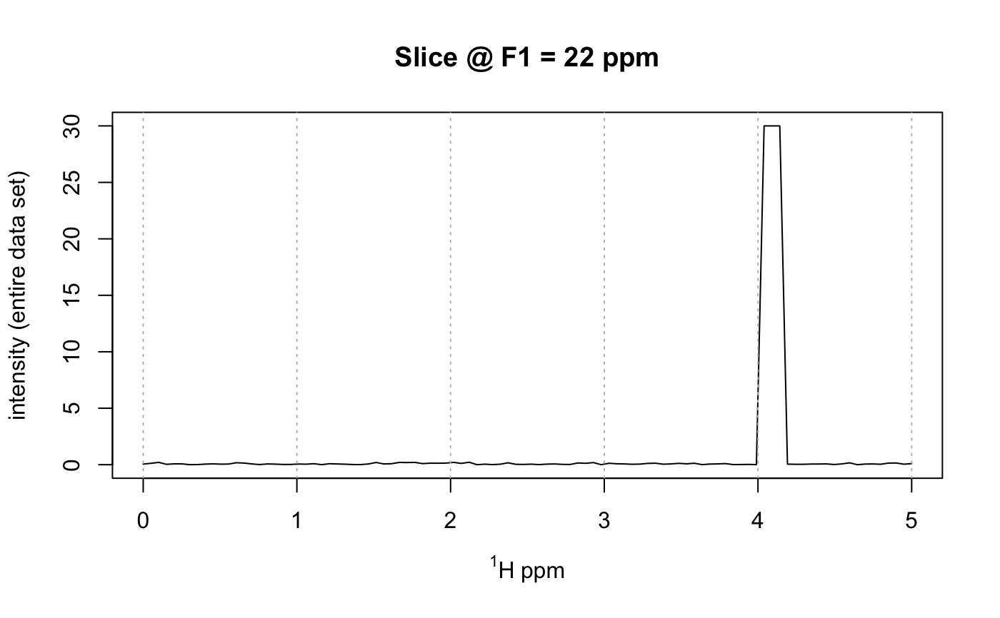

Plots a slice of a 2D spectrum stored in a Spectra2D object.
plotSlice(spectra, which = 1, F2 = NULL, F1 = NULL, showGrid = TRUE, ...)
| spectra | An object of S3 class |
|---|---|
| which | A single integer specifying which 2D spectrum from which to plot the slice. |
| F2 | A single frequency to plot. Matched to the nearest value. |
| F1 | As for |
| showGrid | Logical. If TRUE, show a dotted gray line at each x axis tick mark. |
| ... | Additional parameters to be passed to the plotting routines. |
Side effect is a plot.
Only one of F2 or F1 should be given.
